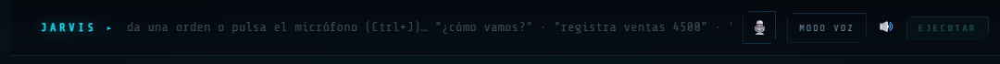
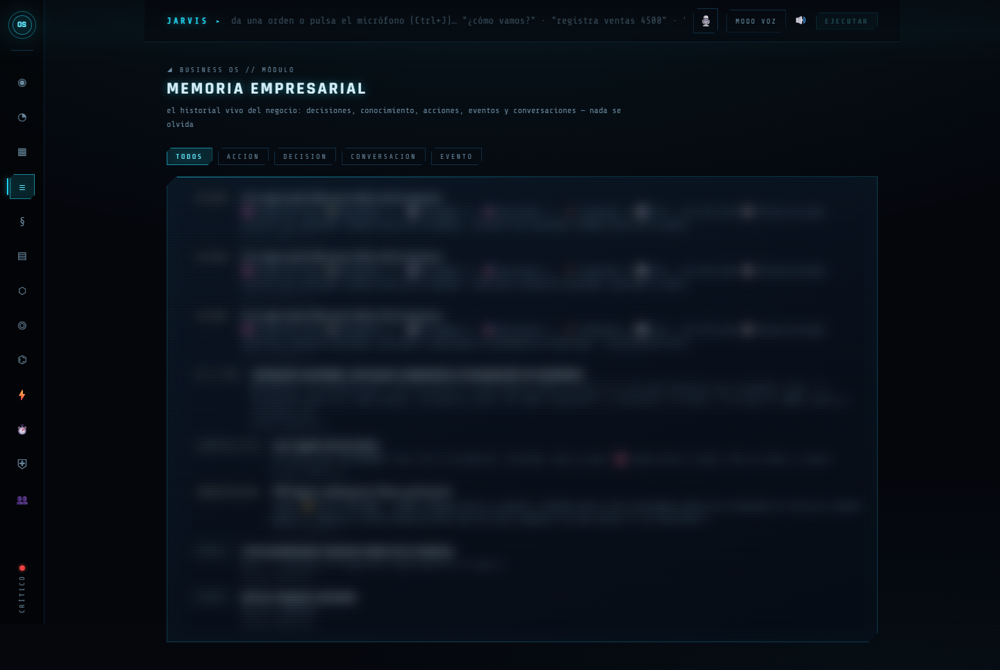
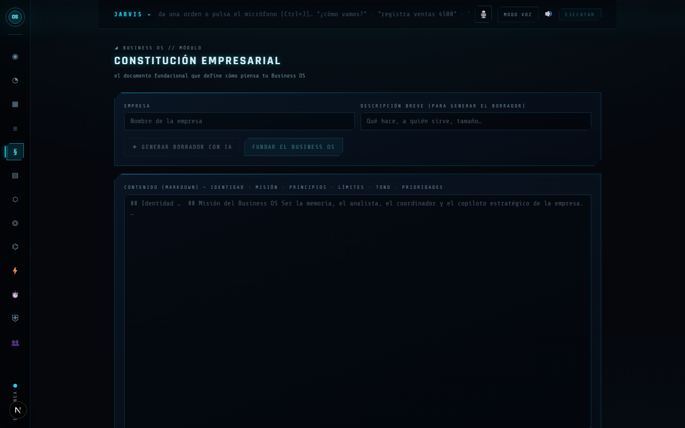
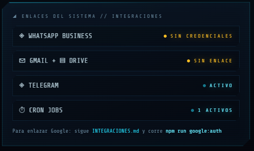

Manual de Usuario Ilustrado · El sistema operativo de negocio autoconfigurable
Versión 2 (ilustrada y verificada contra el código) · Agosto 2026
Incluye: consola JARVIS (14 pantallas) · bot del cerebro · agente principal con voz y visión · 16 automatizaciones · dashboards
Índice
1. ¿Qué es el Business OS?
2. Mapa del sistema, instalación y arranque
3. Encender el sistema (el onboarding)
4. La barra JARVIS — órdenes con texto o voz
5. Las pantallas de la consola, una por una
6. El bot del cerebro en Telegram
7. El agente principal (agent-server): voz, visión, memoria y crons
8. Las 16 automatizaciones programadas
9. Mission Control y Finance OS
10. Integraciones pendientes de credenciales
11. Problemas comunes y su solución
1 · ¿Qué es el Business OS?
El Business OS es un sistema operativo para tu negocio: un cerebro de inteligencia artificial que conoce tu empresa, responde con datos reales, propone decisiones, ejecuta tareas aprobadas y trabaja solo en horarios programados. Le hablas en español normal — por la consola web, por Telegram o por voz.
Llega APAGADO a propósito: es un "Ferrari esperando piloto", sin idea de negocio fija. Se enciende con una entrevista (capítulo 3) que lo configura para TU empresa — cualquier giro, cualquier tamaño.
Las cinco capas
Las 5 capas: el contexto manda, el cerebro razona, la automatización trabaja sola.
Por dónde empezar. El archivo ENCENDIDO.md en la raíz del repo es la guía de arranque del piloto, y docs/SETUP_PROMPT.md el setup técnico guiado. Este manual los complementa con el "para qué sirve" y el "cómo se usa" de cada pieza.
2 · Mapa del sistema, instalación y arranque
El repo trae cuatro aplicaciones que comparten filosofía pero arrancan por separado. Este es el mapa completo, con sus puertos reales:
Las cuatro apps y sus puertos. Consola y bot comparten el cerebro en Neon; los dashboards usan Supabase.
Requisitos
Node.js 20 o superior
Una base Neon (Postgres, gratis) para el cerebro
Claude Code CLI instalado y con sesión iniciada — la consola razona con tu sesión local, sin API key
Una cuenta de Telegram (crear un bot toma 2 minutos con @BotFather)
Consola JARVIS (el cerebro)
cd business-os
# crea .env.local a mano con: DATABASE_URL (Neon) y TELEGRAM_BOT_TOKEN
# opcionales: OPENROUTER_API_KEY (búsqueda semántica), GROQ_API_KEY (audio), SCHEDULER_TZ
npm install
npm run db:setup # crea el esquema bo_* y siembra los 9 agentes
npm run dev # → http://localhost:3010
No hay .env.example en business-os. El README sugiere copiarlo, pero el archivo no existe: crea .env.local a mano con las variables de arriba. La primera compilación tarda 2–3 minutos; espera el Ready en la terminal.
El bot del cerebro (opcional, recomendado — capítulo 6)
cd business-os
npm run bot
Es la consola en tu bolsillo vía Telegram, y su "latido" enciende en cian el indicador "Bot + Scheduler + Centinela" del módulo Gobierno.
El agente principal (capítulo 7)
cd agent-server
cp .env.example .env # aquí SÍ hay example; rellena TELEGRAM_BOT_TOKEN y ALLOWED_CHAT_ID
npm install
npm run dev # o npm start como daemon
Dos bots = dos tokens. Si usas el bot del cerebro Y el agente principal, crea DOS bots distintos en @BotFather. Telegram solo permite una conexión por bot: con el mismo token se pelean por los mensajes.
Para apagar:Ctrl+C en cada terminal. Nunca uses taskkill /IM node.exe — mata todos los procesos de Node de la máquina.
3 · Encender el sistema (el onboarding)
Mientras context/00_EMPRESA.md contenga marcadores {{ASI:...}}, el sistema está APAGADO: funciona, pero razona en genérico. Hay dos llaves de encendido complementarias:
Llave
Qué enciende
Cómo se usa
Skill onboarding-empresa
La capa de contexto (capas 1–2) y los crons del agente
Abre Claude Code en la raíz del repo y di "enciende el sistema". Te entrevista en 5 bloques (identidad, oferta, clientes, estrategia, operación), rellena context/*.md, adapta los crons a tu negocio y los siembra
Onboarding Ingestor (pantalla de la consola)
El cerebro (capa 3): constitución, entidades, KPIs y automatizaciones
En la consola, pulsa FUNDAR EL BUSINESS OS y responde la entrevista guiada (20–30 min, se puede pausar)
El Onboarding Ingestor: el Business OS te entrevista y construye solo el gemelo digital de tu empresa.
La capa de contexto que se rellena
Archivo
Qué guarda
00_EMPRESA.md
Identidad: qué vendes, a quién, cómo cobras, competencia, equipo
01_ESTRATEGIA.md
Métrica norte, objetivos del trimestre, foco semanal (se actualiza cada domingo), anti-objetivos
02_REGLAS_DE_ORO.md
Valores y límites. Las 7 reglas universales YA vienen escritas (nunca fabricar datos, la IA nunca ejecuta pagos, ningún mensaje a cliente sin aprobación…); tú agregas tono y reglas propias
03_DATOS.md
Mapa de fuentes conectadas. Regla dura: fuente en 🔴 = "dato no disponible", nunca se inventa
04_APRENDIZAJES.md
Registro que escribe la IA sola: errores a no repetir, decisiones, tácticas validadas
El contexto es el activo. Los modelos son commodities. Si context/ deja de actualizarse, el sistema muere aunque el código funcione — la revisión semanal de los domingos existe para evitarlo.
4 · La barra JARVIS — órdenes con texto o voz

La barra JARVIS, presente arriba en todas las pantallas de la consola.
Escribe una orden en español y pulsa EJECUTAR (o Enter). El sistema decide solo si es una pregunta, un registro de datos, una regla de vigilancia o una tarea — es el mismo motor que atiende al bot de Telegram.
Ejemplos
"¿cómo vamos?" — resumen del estado del negocio
"registra ventas de hoy 4500" — guarda el KPI
"si el MRR baja de 1000 avísame" — crea una regla del Centinela
"prepara un reporte semanal para el equipo" — encola una acción para tu aprobación
Voz
Micrófono (o Ctrl+J): dicta una orden suelta. Ctrl+J también detiene la escucha.
MODO VOZ (se enciende como ◉ VOZ ACTIVA): conversación continua manos libres — escucha, ejecuta, responde hablando y vuelve a escuchar. Puedes empezar diciendo "Jarvis, …".
Altavoz 🔊: activa/silencia las respuestas en voz alta.
La voz de la consola no necesita credenciales. Usa el reconocimiento y la síntesis del propio navegador en español (es-MX) — funciona mejor en Chrome/Edge. Groq y ElevenLabs se usan en otras piezas: Groq para subir audios de reuniones al Conocimiento, y ambos en el agente de Telegram (capítulo 7).
Bajo cada respuesta aparecen botones de feedback 👍/👎: úsalos — alimentan el aprendizaje del sistema.
5 · Las pantallas de la consola, una por una
Se navega con la barra lateral izquierda (13 iconos); el punto cian inferior indica que la consola está EN LÍNEA (se comprueba cada minuto). La pantalla 14, el Onboarding Ingestor, no está en la barra: se llega con el botón FUNDAR EL BUSINESS OS del Cerebro (ver capítulo 3). Colores del tema: cian = correcto, ámbar = pendiente/aviso, rojo = crítico.
La mayoría de las capturas muestran el sistema recién instalado (estado APAGADO), tal como se ve antes del onboarding; la de Memoria muestra el sistema ya con actividad.
5.1 · Cerebro (Núcleo)
La pantalla principal: la esfera holográfica, los contadores del sistema y la fundación del OS.
Recién instalado: la esfera "SIN CONSTITUCIÓN" y el botón FUNDAR EL BUSINESS OS — así se ve el estado APAGADO.
Cómo usarlo: es tu punto de partida. La primera vez, pulsa FUNDAR EL BUSINESS OS (te lleva al onboarding). Ya encendido, la esfera muestra el pulso del negocio y el ticker inferior la actividad reciente.
5.2 · ROI (Retorno del Sistema)
"Horas y dinero que el Business OS le devuelve a la empresa — estimaciones conservadoras y declaradas, no promesas."
Cuánto tiempo y dinero te ha ahorrado el sistema.
Cómo usarlo: entra de vez en cuando, o pregunta por chat: "¿cuánto me has ahorrado este mes?".
5.3 · Telemetría (KPIs)
"Los signos vitales de la empresa — el núcleo los usa en cada decisión y el Centinela los vigila por umbral."
Los indicadores clave, con su historial.
Cómo usarlo: registra valores por la barra ("registra ventas de hoy 4500"), por la pantalla o por Telegram (/kpi ventas 4500). El Centinela vigila umbrales: "si las ventas semanales bajan de X, avísame".
5.4 · Memoria Empresarial
"El historial vivo del negocio: decisiones, conocimiento, acciones, eventos y conversaciones — nada se olvida."

La línea de tiempo del negocio, filtrable por tipo: acción, decisión, conversación, evento.
Cómo usarlo: es de solo lectura — el sistema la escribe solo. Ven aquí a reconstruir qué pasó y cuándo: qué decidió el Decision Engine, qué cron corrió, qué conversaste con cada agente.
5.5 · Constitución Empresarial
"El documento fundacional que define cómo piensa tu Business OS."

Identidad, misión, principios, límites, tono y prioridades — editable en markdown y versionada.
Cómo usarlo: normalmente la escribe el onboarding. Puedes generar un borrador con IA (nombre + descripción breve → GENERAR BORRADOR CON IA) o editarla a mano. Cada cambio crea una versión nueva: nada se pierde.
5.6 · Knowledge Engine (Conocimiento)
"Todo lo que ingresa se convierte en conocimiento del núcleo: texto, notas, contratos, reportes, exportes CSV…"
La biblioteca del cerebro.
Cómo usarlo: pega texto o sube archivos — PDF y fotos (facturas, notas, pizarras) incluidos: Claude "mira" el archivo y transcribe montos, fechas y datos exactos al cerebro. También audios de reuniones (requiere GROQ_API_KEY). Luego pregunta con normalidad: "¿qué dice el contrato de X sobre la renovación?".
5.7 · Modelo de la Empresa
"El mapa vivo: personas, clientes, productos, proyectos, procesos, contratos… el núcleo razona sobre este modelo."
El grafo de entidades: quién es quién y qué se relaciona con qué.
Cómo usarlo: díselo en natural — "Juan trabaja en el Proyecto Alfa" — por JARVIS o Telegram, y el grafo se conecta solo.
5.8 · Decision Engine
"No responde: piensa. Analiza ventas, caja, capacidad, riesgos e historial antes de recomendar."
Cada decisión queda registrada con su análisis y recomendación.
Cómo usarlo: plantea la decisión ("¿contrato o subcontrato?", "¿subo precios 10%?"). Recibes análisis, opciones y recomendación argumentada. La decisión final es tuya y queda archivada.
5.9 · Agentes Especializados
"Nueve especialistas. Un solo cerebro. Todos conocen toda la empresa."
El equipo directivo virtual: CEO, Finanzas, RRHH, Ventas, Operaciones, Marketing, Legal, Soporte y Analytics.
Cómo usarlo: elige un agente y conversa. Al CFO: "¿aguantamos 6 meses con la caja actual?"; a Legal: "redacta una cláusula de confidencialidad" (siempre con revisión humana). Cada agente responde desde su especialidad pero con el cerebro común: Finanzas sabe lo que pasó en Ventas.
5.10 · Automation Engine (Acciones)
"Cola de acciones: el sistema propone, tú apruebas, el motor ejecuta. Emails, reportes, briefs, convocatorias…"
La cola de trabajo con el estado de cada acción.
Cómo usarlo: revisa y aprueba o rechaza. En Gobierno defines qué tipos se auto-ejecutan y cuáles siempre esperan tu visto bueno. Nada crítico sale sin aprobación.
5.11 · Automatización (programadas)
"El gerente da instrucciones, el Business OS ejecuta."
Estado de integraciones, programación de crons y reglas del Centinela.
Cómo usarlo: crea programaciones hablando — "todos los lunes a las 8 prepárame el resumen financiero" — o con el formulario. Aquí las ves, pausas o eliminas, y defines reglas del Centinela por umbral de KPI.
5.12 · Gobierno
"Salud del sistema, políticas de ejecución y auditoría inmutable — nada falla en silencio, nada crítico sin tu aprobación."
Semáforo de salud, políticas de autonomía y registro de auditoría.
Salud: si "Bot + Scheduler + Centinela" está en rojo, arranca npm run bot (capítulo 2). El bot late cada 30 s; sin latido por 2 minutos se considera caído.
Políticas: qué acciones se auto-ejecutan y el monto máximo sin aprobación. Vacío = TODO lo que implique dinero pide tu visto bueno.
Auditoría: registro inmutable de todo lo que el sistema hizo, con el canal de origen (web, telegram, cron, regla).
5.13 · Gestión de Equipo
"Por seguridad, el sistema asume que eres el único operador salvo que actives el modo Multi-Empleado."
Control de operadores del sistema.
Para qué sirve: el OS nace de un solo piloto. Cuando quieras dar acceso a tu equipo, aquí se activa el modo Multi-Empleado.
5.14 · Onboarding Ingestor
La entrevista de encendido del cerebro — no aparece en la barra lateral: se llega con FUNDAR EL BUSINESS OS. Captura y detalle en el capítulo 3.
6 · El bot del cerebro en Telegram
Con npm run bot (en business-os/) el cerebro entero cabe en tu bolsillo: el mismo motor de la barra JARVIS, por Telegram. Este proceso además ejecuta los cron jobs de la consola y evalúa las reglas del Centinela cada 30 segundos.
Un dueño, un chat. El bot se vincula al PRIMER chat que le escriba (o al fijado en TELEGRAM_ALLOWED_CHAT_ID). Cualquier otra persona recibe: "⛔ Este Business OS ya está vinculado a su dueño."
Comandos
Grupo
Comandos
Base
/start · /help
Agentes
/agentes (lista los 9) · /agente finanzas (fija especialista) · /auto (vuelve al enrutador automático)
Texto libre (sin /): escribe normal y el enrutador de instrucciones decide qué motor responde — igual que la barra JARVIS. "registra ventas de hoy 4500", "todos los días a las 8am envíame el resumen".
Este bot es solo de texto. No procesa notas de voz ni fotos. Para hablarle por voz o mandarle fotos de facturas usa el agente principal (capítulo 7) o sube los archivos por la pantalla Conocimiento (capítulo 5.6).
7 · El agente principal (agent-server): voz, visión, memoria y crons
Además de la consola, el repo trae un agente persistente que corre en tu máquina: no es un chatbot — cada mensaje tuyo lanza el Claude Code real con tus skills y tu contexto. Le hablas por Telegram desde cualquier lugar.
El circuito completo: tu mensaje viaja a tu máquina, el Claude Code real lo resuelve, y la respuesta vuelve — en texto o hablada.
Qué sabe hacer
Notas de voz: se transcriben con Groq Whisper y, si tienes ElevenLabs configurado, te responde con una nota de voz. Ambas son opcionales e independientes (/voice muestra el estado).
Fotos y documentos: mándale una foto (factura, pizarra, pantalla) o un archivo con o sin pregunta — lo descarga y lo analiza con visión multimodal. Los archivos subidos se limpian tras 24 horas.
Memoria: aprende de ti con memoria persistente (SQLite + búsqueda FTS5, sectores semántico/episódico, con refuerzo por uso y olvido gradual). /memory muestra qué recuerda, /forget lo borra todo.
Crons: tareas programadas que trabajan solas (capítulo 8).
Comandos
Comando
Qué hace
/start
Saludo + comandos + estado de voz (STT/TTS ✓/✗)
/chatid
Muestra tu Chat ID (el único comando que responde a cualquiera — úsalo para rellenar ALLOWED_CHAT_ID)
/newchat
Conversación nueva, sin contexto previo
/memory · /forget
Ver memorias guardadas · borrarlas todas
/voice
Estado de voz: STT (Groq) y TTS (ElevenLabs)
/schedule
Lista los crons con estado y próxima ejecución
Gestión de crons desde la terminal
cd agent-server
npx tsx scripts/seed-crons.ts # siembra los 16 crons de automations/cronjobs-seed.json
npx tsx src/schedule-cli.ts list # verlos
npx tsx src/schedule-cli.ts pause <id> # pausar · resume <id> reactiva
npx tsx src/schedule-cli.ts run <id> # ejecutarlo AHORA
npx tsx src/schedule-cli.ts create "<prompt>" "<cron>" <chatId> # crear uno nuevo
npx tsx src/schedule-cli.ts delete <id> # eliminar
Consumo y cuota. Cada mensaje y cada corrida de cron lanzan una sesión de Claude: gastan cuota de tu cuenta. Siembra los crons cuando el sistema ya esté encendido y pausa los que no uses. Si un cron choca con el límite de cuota, el scheduler reintenta solo con espera creciente (15 → 30 → 60 min) sin quemar el horario del día; con AGENT_MODEL en el .env puedes mandar los crons a otro modelo. Tras un reinicio, las tareas atrasadas se escalonan (una cada 3 min) para no dispararse todas juntas.
Salud del agente.npx tsx scripts/status.ts dentro de agent-server te dice qué está configurado y qué falta (ejemplo real en el capítulo 11).
8 · Las 16 automatizaciones programadas
La semilla automations/cronjobs-seed.json trae 16 crons pensados para cualquier empresa. La skill onboarding-empresa los adapta a tu negocio (prompts, horarios, cuáles activar) antes de sembrarlos. Los horarios usan la zona SCHEDULER_TZ de tu .env.
Cron
Cuándo
Qué hace
morning-briefing
Diario 07:00
☀️ Briefing del día: métrica norte, dinero, pendientes, agenda, riesgos y LA prioridad — solo con fuentes reales, nunca inventa
cierre-del-dia
Diario 21:00
Resumen del día (<150 palabras) y prioridad de mañana; registra aprendizajes
revision-semanal
Domingo 18:00
📅 Números vs. objetivos, auditoría del contexto y los crons, y UN foco para la semana
seguimiento-leads
L–V 10:00
Prospectos sin respuesta >48 h con borradores de seguimiento listos (NUNCA envía solo)
Backup fechado de context/ + aviso si el contexto lleva 2+ semanas sin cambios
pulso-metrica-norte 💤
L–V 14:00
Vigila la métrica norte (desvíos >10%). Despierta al conectar una fuente de ingresos (cap. 10)
agenda-manana 💤
Diario 19:00
Agenda de mañana con preparación por evento. Despierta al conectar Google Calendar
inbox-resumen 💤
L–V 08:00 y 16:00
Resumen del inbox con borradores solo para críticos. Despierta al conectar Gmail
Total: 16 crons — 13 activos y 3 dormidos (esperan una integración, capítulo 10). Contrólalos por Telegram (/schedule en el agente, /tareas en el bot del cerebro) o por CLI (capítulo 7).
9 · Mission Control y Finance OS
Dos dashboards opcionales incluidos en el repo. Ambos usan Supabase (crea un proyecto gratis y sigue docs/SETUP_PROMPT.md, secciones 3A y 3B, para crear sus tablas).
App
Qué trae
Arranque
Mission Control
Tablero Kanban con prioridades y plantillas · chat con el agente (streaming, voz, diagramas) · feed de actividad y conversaciones · gestión de crons · calendario · pizarra Excalidraw · búsqueda global · notificaciones. Instalable como app en el celular (PWA)
cd Mission-Control && npm install && npm run dev → puerto 3000
Finance OS
Transacciones editables con KPIs y gráficos · gastos recurrentes y anuales · reportes · calculadora financiera por pasos · agente CFO que analiza y recomienda en streaming
cd finance-os && npm install && npm run dev → puerto 3000
Mismo puerto. Ambos usan el 3000 por defecto: si los corres a la vez, arranca uno con npm run dev -- -p 3001. El acceso a Mission Control se limita con la variable ALLOWED_EMAILS.
Ojo con el plan gratuito de Supabase: suspende proyectos inactivos tras unas semanas. Si un día estos dashboards no cargan, entra al panel de Supabase y reactiva (o recrea) el proyecto, y actualiza las claves en los .env.local.
10 · Integraciones pendientes de credenciales
El código de estas integraciones ya está en el repo; solo espera tus credenciales. La pantalla Automatización las marca en ámbar — no son fallas.

El panel de enlaces del sistema: qué está activo y qué espera credenciales.
Google (Gmail + Drive)
Crea credenciales OAuth en Google Cloud Console y ponlas en business-os/.env.local como GOOGLE_CLIENT_ID y GOOGLE_CLIENT_SECRET.
Corre npm run google:auth (una sola vez): abre el navegador, autorizas, y el permiso queda guardado en la base de datos.
Desbloquea: /gmail (absorbe el inbox al cerebro), /drive e /importar (Docs y Sheets al conocimiento), redacción y envío de correos — el envío real solo ocurre con tu política email_auto activada; si no, todo correo queda como borrador en la cola de Acciones.
Despierta los crons inbox-resumen y agenda-manana.
WhatsApp Business
Crea una app en Meta con Cloud API (requiere verificación de negocio).
Rellena WHATSAPP_TOKEN, WHATSAPP_PHONE_NUMBER_ID y WHATSAPP_VERIFY_TOKEN en business-os/.env.local.
Apunta el webhook de Meta a <tu-dominio>/api/whatsapp. Misma regla que Telegram: un dueño, un número (o fija WHATSAPP_ALLOWED_NUMBER).
Con eso, das órdenes al OS por WhatsApp con el mismo cerebro. Por ahora solo texto (sin fotos ni audios por este canal).
Las demás
Integración
Qué necesitas
Qué desbloquea
Audio → Conocimiento
GROQ_API_KEY en business-os/.env.local (gratis; ya la tienes en agent-server/.env — cópiala)
Subir audios de reuniones a la pantalla Conocimiento
Voz del agente principal
GROQ_API_KEY + ELEVENLABS_API_KEY y ELEVENLABS_VOICE_ID en agent-server/.env
Notas de voz de entrada y respuestas habladas en Telegram
Stripe / fuente de ingresos
Elegir la fuente y registrarla en context/03_DATOS.md (aún no hay código de Stripe: la conexión es vía el mapa de datos)
Que los crons financieros y pulso-metrica-norte reporten ingresos reales
Nota del repo: varios mensajes del sistema citan una guía business-os/INTEGRACIONES.md que todavía no está escrita. Los pasos de arriba son la versión verificada contra el código; cuando esa guía exista, será la referencia extendida.
11 · Problemas comunes y su solución
Síntoma
Causa probable
Solución
El navegador se queda cargando
El servidor no terminó de compilar o no está corriendo
Mira la terminal: espera el Ready o arranca la app (capítulo 2)
"Telegram rechazó el token" al arrancar
TELEGRAM_BOT_TOKEN vacío o inválido
Crea tu bot con @BotFather y pega el token en el .env correspondiente
"Bot + Scheduler + Centinela" en rojo en Gobierno
No está corriendo npm run bot
Arrancarlo; en un minuto el latido enciende el indicador
Los dos bots se roban los mensajes
El mismo token en agent-server y business-os
Un bot distinto (token distinto) para cada uno
El agente responde con error de límite
Se agotó la cuota de Claude
Esperar el restablecimiento; los crons reintentan solos (15→30→60 min). Opcional: fijar otro modelo con AGENT_MODEL
El bot mezcla temas viejos
Sesión acumulada
Envíale /newchat
El bot ignora a un familiar/colega
Un dueño, un chat: ya está vinculado a ti
Es a propósito. Para multi-operador, pantalla Equipo (5.13)
La consola se ve con OTRA marca o tema
Otro proyecto ocupa el puerto 3010 (hay más de una copia del OS en la máquina)
Cierra la otra app o arranca esta en otro puerto: npx next dev --turbopack -p 3011
Subir un audio a Conocimiento da error
Falta GROQ_API_KEY en business-os/.env.local
Agregarla (capítulo 10)
Mission Control / Finance OS no cargan datos
Supabase sin configurar o proyecto suspendido
Capítulo 9 — crear/reactivar proyecto y actualizar claves
Primera carga lentísima
Compilación inicial de Next.js
Normal la primera vez; después vuela
El chequeo de salud del agente
Dentro de agent-server, corre npx tsx scripts/status.ts. Salida real de ejemplo:
─── Agent Server Status ───
✗ Process: stale PID ***
✓ Database: ...\agent-server\store\agent-server.db
✓ .env file
✓ TELEGRAM_BOT_TOKEN: ***
✓ ALLOWED_CHAT_ID: ***
✓ GROQ_API_KEY (STT): ✓ set
✓ ELEVENLABS_API_KEY (TTS): ✓ set
✗ ANALYTICS_SUPABASE_KEY: not set (optional)
✗ servicio de inicio (pm2): no configurado — opcional
✓ Build (dist/): ok
Cada línea te dice qué está listo (✓) y qué falta (✗). "Stale PID" = el agente no está corriendo ahora: arráncalo con npm start.
Nunca hagas esto:taskkill /IM node.exe /F. Mata TODOS los procesos de Node de la máquina (incluidas otras apps tuyas). Cierra cada terminal con Ctrl+C.
Business OS · Manual de usuario ilustrado v2 · Verificado contra el código en agosto 2026 · Las capturas muestran el sistema recién instalado (estado APAGADO), tal como lo verás antes del onboarding.